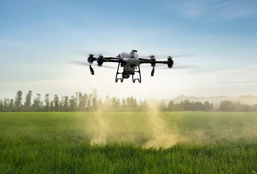
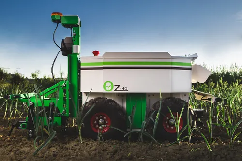

Drone

Drones are one of the most important modern agricultural tools. It is an unmanned aerial vehicle that helps in yield optimization, monitoring crop growth and thereby increasing production.
Working
They typically work as other modes of air transportation, when the engine is turned on ,it starts up and the propellers rotate to enable flight. They are controlled by remote operators.This is one of the important tools used in agriculture.
Soil Sensor

Soil sensors are instruments used to measure soil moisture , pH, salinity conductivity , temperature. As in the process of agricultural cultivation, the soil condition needs to be periodically monitored to improve productivity. This is one of the important used in mordern farming in india by using it the farmer get more benifits on working on the farm fields.Soil sensors are instruments used to measure soil moisture , pH, salinity conductivity.
Robotic Weeders

Instruments used to measure soil moisture , pH, salinity conductivity , temperature. As in the process of agricultural cultivation, the soil condition needs to be periodically monitored to improve productivity. Based on the element the sensor measured from the soil, there are 5 types of sensors, namely, soil moisture sensor, soil temperature sensor, soil conductivity sensor, soil pH sensor, Soil NPK Sensor.The most needed example of modern agriculture tools.
Working